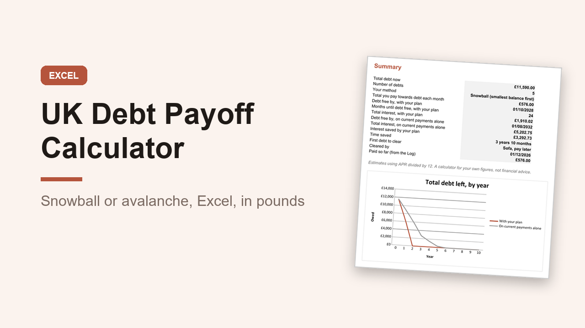

UK Debt Payoff Calculator, Snowball and Avalanche Excel Tracker, GBP
GBP 7.00 · instant digital download

See your debt free date and a clear order to pay things off.
List your credit cards, overdraft, loans, car finance and buy now pay later, choose snowball or avalanche, and the spreadsheet works out the rest.
Made for the UK: pounds, APR, UK spelling and UK debt types.
What you get: one editable Excel workbook (.xlsx) with 8 sheets.
1.
Start here: plain instructions.
2.
Summary: your debt free date, total interest, and how both compare with paying only your current payments, plus a chart of what you owe by year.
3.
Debts: up to 15 debts with balance, APR and monthly payment, with a check that flags any payment that does not cover the interest.
4.
Plan: snowball (smallest balance first), avalanche (highest APR first) or your own order, an extra monthly amount, and the month each debt clears.
5.
Schedule: month by month for up to 20 years, with each cleared payment rolling on to the next debt.
6.
Compare: months and interest on your current payments alone, debt by debt.
7.
Log: 300 rows to record payments.
8.
Progress: type in your latest balances to see how much of each debt is cleared.
A worked example with five debts is filled in.
Student loans are left out, as they are repaid through pay.
Monthly estimates, so lender figures will differ slightly.
Prints on A4.
Opens in Excel, Google Sheets and Numbers.
Digital download, nothing is posted.
A calculator for your own figures, not financial advice..
What happens after you buy
Payment and delivery are handled by Gumroad. You get the download straight after paying, and a copy of the link by email. Nothing is posted to you.
Tags: debt payoff, debt snowball, debt avalanche, debt tracker, excel template, uk budget, debt free, credit card payoff, personal finance, money tracker